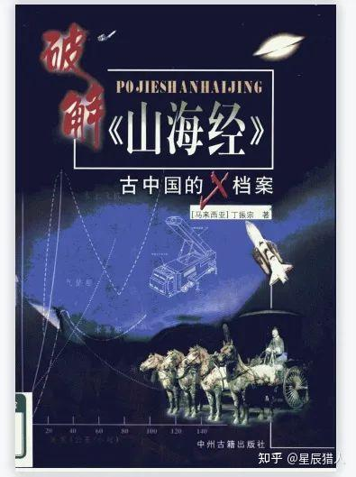

📖《破解山海经》是一部从现代视角解读山海经的著作。作者丁振宗以独特的视角，尝试破解山海经中记载的山川地理、珍禽异兽背后的真实含义。
一本奇书，从现代人的角度来写山海经里面到底是什么。可以和西琴的地球编年史一起看，非常开眼。
丁振宗尝试用现代地理学、生物学知识来破解山海经中的记载：那些奇异的怪兽可能是古人眼中的某种真实动物，那些神秘的山川可能对应着现实中的某处地理。这种解读方式虽然不一定正确，但提供了一种全新的可能性：山海经也许不是纯粹的神话，而是被时间扭曲的真实记忆。对于对中国上古文化感兴趣的读者，这是一本不可错过的奇书。